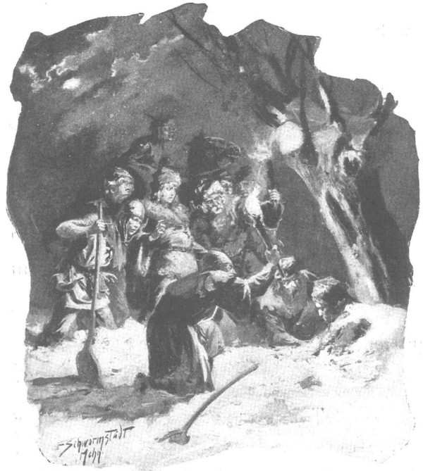

Thoạt nghe tin không lành, không đợi được quận công cho phép, Zbyszko nhảy ngay ra tàu ngựa, ra lệnh thắng ngựa. Vốn là một hộ vệ xuất thân quý tộc, chàng trai người Séc được có mặt trong phòng tiệc bên chủ, chỉ kịp quay vào nhà mang ra cho chủ chiếc áo lông cáo ấm áp. Chàng không tìm cách giữ Zbyszko lại, bởi bẩm sinh nhanh trí, chàng hiểu rằng ngăn giữ cũng chẳng thể mang lại kết quả gì, và sự chậm trễ có khi là chết Nhảy lên lưng con ngựa thứ hai, ra đến cổng chàng còn kịp đón mấy bó đuốc ở tay lính canh rồi phi theo đoàn người của quận công, do vị trấn thành cao tuổi nhanh nhẹn dẫn đầu.
Ngay sau khi ra khỏi cổng thành họ va phải bóng đêm đen đặc, nhưng bão tuyết hình như có hơi dịu bớt. Suýt nữa họ bị lạc đường, nếu không có người đầu tiên báo tin dữ lúc này đang dẫn đường cho họ đi nhanh và đúng hướng, nhờ mang theo con chó đánh hơi đã thuộc đường. Ra ngoài đồng trống, gió lốc lại đập thẳng vào mặt họ, nhất là vì họ đang cố phi nước kiệu. Con đường quan lộ bằng đất nện, nhưng nhiều chỗ bị tuyết phủ dày nên phải đi chậm, bởi lũ ngựa bị ngập tuyết đến sát bụng. Người của quận công đốt đèn đuốc, đi giữa làn khói và ánh lửa bị gió thổi điên cuồng như thể muốn rứt đứt ngọn lửa ra khỏi mớ đóm thông đẫm nhựa, rồi ném ra đồng trống hoặc quẳng vào rừng. Đường khá xa. Họ vượt qua các trang ấp gần thành Ciechanow, rồi qua cả trang Niedzbórz và rẽ hướng trang Radzanow. Từ chỗ trang Niedzbórz, bão tuyết quả thực lặng hẳn. Gió đập yếu hơn, không mang theo những đám vụn tuyết nữa. Bầu trời rạng dần. Từ trên không còn lay phay chút tuyết, rồi sau ngừng hẳn. Sau đó, trong những khe hở giữa các đụn mây hiện ra lấp lánh các vì sao. Ngựa bắt đầu rừ rừ, các kỵ sĩ thở thoải mái hơn. Sao hiện lên mỗi lúc một dày và trời giá lạnh hơn. Sau khoảng thời gian đọc được mấy bài kinh, trời im lặng hẳn.
Muốn trấn an Zbyszko, hiệp sĩ de Lorche đi cạnh chàng, nói rằng trong mọi tình huống nguy hiểm, ông Jurand sẽ nghĩ trước hết đến việc cứu cô con gái, nên dầu có tìm thấy mọi người chết cóng hết, thì họ vẫn sẽ tìm được cô gái đang còn sống, và có thể là đang ngủ dưới những lớp da che bọc. Nhưng Zbyszko chỉ hiểu lời chàng ta rất ít, mà cũng chẳng có thời gian để nghe nữa, vì chỉ chốc lát sau, người dẫn đường đi trước rẽ khỏi đường cái quan.
Chàng hiệp sĩ trẻ tiến lên trước và hỏi:
- Tại sao lại rẽ chỗ này?
- Họ không bị vùi trên đường cái, mà ở kia! Các ngài có thấy đám cây tống quán sủ đằng kia không?
Nói đoạn, anh ta chỉ tay vào một hàng cây đen mờ, có thể nhìn thấy trên nền tuyết trắng, khi trăng nhô ra từ đám mây che, khiến đêm sáng hơn.
- Họ đã đi lệch khỏi đường cái quan.
- Họ đi lệch khỏi đường cái và đi vòng theo con sông nhỏ. Lúc gió thổi mạnh và sương giá che mờ thì rất dễ xảy ra chuyện ấy. Và họ cứ đi, đi mãi, đến khi lũ ngựa ngã gục.
- Sao các ngươi tìm thấy họ?
- Lũ chó đánh hơi đấy.
- Gần đấy có túp lều nào không?
- Có ạ, nhưng ở phía bên kia sông. Đây gần Wkra rồi.
- Lên ngựa! - Zbyszko hô vang.
Nhưng ra lệnh dễ hơn thực hiện, vì trời giá băng kinh khủng, trên đồng tuyết vừa rơi vẫn chưa đông cứng lại thành băng, xốp và ngập sâu đến ngang đầu gối ngựa, nên họ chỉ có thể di chuyển rất chậm. Đột nhiên vang đến tai họ tiếng chó sủa ăng ẳng, trước mặt thấp thoáng một thân liễu to nhiều cành nhánh, với những cành trơ trụi không lá loáng ánh trăng xõa xượi.
- Họ nằm đằng kia, bên khoảnh rừng tống quán sủ, - người dẫn đường nói, - nhưng ở đây chắc cũng phải có thứ gì…
- Một đống tuyết dưới gốc liễu! Soi đuốc lên!
Mấy người gia nhân của quận công nhảy xuống ngựa, giơ đuốc soi, rồi sau đó một người chợt kêu lên:
- Có người dưới tuyết! Thấy cái đầu đây này!
- Cả con ngựa nữa! - Người thứ hai cũng kêu.
- Bới ngay!
Những chiếc xẻng liền được ấn xuống, hất tuyết sang bên.
Lát sau họ trông thấy một hình người ngồi dưới gốc liễu, đầu gục xuống ngực, chiếc mũ tụt xuống che khuất mặt Một tay người ấy nắm đây thắng ngựa, còn con ngựa nằm bên cạnh, mõm chúi xuống tuyết. Hẳn người này rời khỏi đoàn, chắc định tìm đến chỗ có người ở để gọi cứu viện, nhưng tới đây thì con ngựa gục, người ấy đành phải nấp dưới gốc liễu phía ngược với hướng gió rồi bị cóng.
- Đuốc! - Zbyszko kêu lên.
Một gia nhân đưa đuốc vào gần khuôn mặt người bị cóng, nhưng thật khó nhận ra đó là ai. Mãi đến khi người gia nhân thứ hai ngửa đầu của kẻ bị nạn lên, từ lồng ngực tất cả những người có mặt chợt đồng thanh thốt lên một tiếng kêu:
- Hiệp sĩ trang Spychow!
Zbyszko liền ra lệnh cho hai người mang ông vào cấp cứu trong túp lều gần nhất, còn chàng và những người khác không để phí một giây, theo người dẫn đường đi cứu số còn lại trong đoàn người gặp nạn. Dọc đường, chàng thầm nghĩ nơi ấy có Danusia, vợ chàng, đang nằm, có thể không còn sống nữa - và chàng thúc mạnh ngựa, dồn nốt chút hơi tàn lao vào đống tuyết ngập sâu đến tận bụng. May thay, chỗ ấy không mấy xa, chỉ cách đó vài trăm thước là cùng. Trong bóng tối có tiếng kêu: “Đến đây!” Đó là tiếng mấy người được cử ở lại canh những kẻ bị tuyết vùi. Zbyszko lao đến, nhảy phắt xuống ngựa.
- Cầm ngay lấy xẻng!
Những người được cắt cử ở lại canh đã bới được hai chiếc xe trượt. Cả người lẫn ngựa của hai xe này đều đã chết cóng không sao cứu nổi. Chỗ các chiếc xe khác có thể được nhận ra qua hình thù những gò tuyết lô nhô đây đó, tuy không phải xe trượt nào cũng được phủ bạt kín hết. Bên một số cỗ xe trông rõ những con ngựa, bụng tì vào cồn tuyết, chồm lên như định cố chạy tiếp, và chết cóng trong lần nỗ lực cuối cùng. Trước một đôi ngựa kéo, một người cầm thương đang đứng sững, tuyết ngập quá thắt lưng. Bên những cỗ xe sau, nhiều gia nhân chết cóng, tay vẫn còn nắm chặt dây mõm ngựa. Hẳn họ bị thần chết bắt gặp giữa lúc đang định kéo ngựa ra khỏi các cồn tuyết phủ. Chiếc xe cuối đoàn chưa bị tuyết phủ kín hoàn toàn. Người đánh xe ngồi phía trước, hai tay úp che tai, phía sau có hai người nằm. Một cồn tuyết dài phủ ngang ngực họ, nối liền với lớp tuyết hai bên thành tấm khăn liệm che người, còn họ nom như thể đang ngủ, lặng lẽ và bình yên. Nhưng ngay cả hai người này cũng chết cóng trong cuộc vật lộn cạn hơi với cơn bão tuyết, bởi tư thế cuối cùng của họ thể hiện một nỗ lực ghê gớm. Một vài xe trượt bị lật nhào, một số chiếc bị gãy gọng. Chốc chốc, những chiếc xẻng lại làm phơi trần ra những chiếc cổ ngựa cong vồng lên như cánh cung, những đầu ngựa gằm xuống, răng ngập sâu vào tuyết, những hình người ở trong xe hoặc bên cạnh xe - nhưng không hề tìm thấy một phụ nữ nào. Chốc chốc Zbyszko lại đích thân cầm xẻng đào bới, mồ hôi chàng ướt đẫm vầng trán, để rồi sau đó chàng lại dõi mắt nhìn những xác người chết cóng, tim đập dồn dập, chỉ e phải thấy giữa những người đó một khuôn mặt thân yêu. Nhưng chỉ hoài công! Ánh đuốc chỉ soi tỏ những bộ mặt lởm chởm râu ria dữ tợn của những người chuyên giết giặc ở trang Spychow, mà không hề thấy Danusia, không hề thấy một phụ nữ nào khác!
- Sao vậy nhỉ? - Chàng hiệp sĩ trẻ ngạc nhiên tự hỏi.
Chàng gọi mọi người đang làm việc đằng kia hỏi xem có phát hiện được gì không, nhưng họ cũng chỉ đào bới được toàn đàn ông mà thôi. Sau rốt, công việc cũng kết thúc. Gia nhân thắt ngựa của họ vào những cỗ xe trượt, ngồi lên ghế, đánh xe chở xác chết về phía Niedzbórz, đến nơi ấm áp, cố tìm cách cứu lần nữa xem có ai sống lại được chăng. Zbyszko, chàng trai Séc và hai người nữa ở lại. Chàng chợt nghĩ rằng chiếc xe trượt chở Danusia có thể đã rời khỏi đoàn, rất có thể ông Jurand thắng cho xe của nàng những con ngựa tốt nhất và đã ra lệnh cho xe nàng phóng đi trước, mà cũng có thể ông để nàng ở lại một túp lều nào đó dọc đường. Zbyszko không biết nên làm gì nữa, chàng những muốn tìm kiếm tiếp tục trong những gò tuyết gần đó, tìm khắp khu rừng tống quán sủ, rồi sau đó quay trở lại tìm kiếm dọc quan lộ.

Zbyszko dõi mắt nhìn những xác chết cóng
Nhưng trong các gò tuyết, không thấy gì cả. Trong khu rừng tống quán sủ, đôi lần những con mắt sói chiếu vào họ, nhưng họ cũng chẳng hề tìm thấy dấu vết nào của người hay ngựa. Lúc này, cánh đồng trải dài giữa khu rừng và quan lộ đã phơi ra trong ánh trăng, trên bề mặt trắng tinh buồn thảm ấy đây đó cũng nổi lên những bóng đen thẫm màu phía xa xa, nhưng đó cũng vẫn là những con sói nhanh nhẹn chạy trốn khi con người lại gần.
- Thưa cậu chủ, - rốt cuộc chàng trai người Séc lên tiếng, - ta cứ đi tìm nơi đây cũng chỉ hoài công, tiểu thư trang Spychow không hề có mặt trong đoàn đâu ạ.
- Trở lại quan lộ! - Zbyszko ra lệnh.
- Trên quan lộ cũng chẳng tìm thấy đâu. Tôi đã nhìn kĩ xem trong các xe trượt, có xe nào chở những chiếc rương đựng đồ trang sức xứ Biaioglow không, nhưng không hề có. Tiểu thư đã ở lại trang Spychow rồi.
Thấy lời nhận xét quả là đúng đắn, Zbyszko nói:
- Xin Chúa ban cho đúng như lời ngươi nói.
Chàng trai người Séc mỗi lúc một tỏ ra thông minh hơn trong suy luận:
- Nếu tiểu thư có mặt trên một xe nào đó, ắt hẳn lão hiệp sĩ đã không bao giờ rời bỏ tiểu thư, khi cưỡi ngựa phóng đi thể nào ngài cũng cho tiểu thư ngồi đằng trước, và nếu vậy thì chúng ta đã tìm thấy tiểu thư nằm bên cạnh ngài.
- Hãy trở lại đó lần nữa xem sao! - Zbyszko thốt lên bằng giọng lo lắng.
Bởi chàng chợt nghĩ mọi việc có thể xảy ra đúng như chàng trai Séc vừa nói. Biết đâu họ tìm chưa thật kỹ! Biết đâu đúng là ông Jurand đã đặt Danusia ngồi lên ngựa, đằng trước ông, rồi khi con ngựa ngã gục, Danusia đã rời cha để mong tìm người nào đó đến cứu ông. Nếu thế, nàng phải nằm đâu đó dưới tuyết gần đấy.
Như đoán được ý nghĩ của chàng, Glowacz nhắc lại:
- Nhưng nếu vậy thì trên các xe trượt kia phải tìm thấy áo dài lễ hội, chứ chắc tiểu thư không thể đến triều đình trong bộ quần áo mặc đi đường được đâu, thưa chủ nhân.
Mặc dù nhận xét của chàng ta là đúng, họ vẫn quay trở lại chỗ cây liễu lần nữa, nhưng cả dưới gốc cây lẫn chung quanh, họ không tìm thấy gì cả. Gia nhân của quận công đã đưa ông Jurand về Niedzbórz, chung quanh hoàn toàn vắng vẻ. Chàng trai Séc còn nhận xét thêm, là nếu giả như có tiểu thư ở đâu đấy, hẳn con chó săn mà người dẫn đường mang theo - con chó đã tìm thấy ông Jurand - đã đánh hơi được chỗ nàng nằm. Và đến khi ấy Zbyszko mới thở phào một hơi, bởi chàng gần như tin chắc rằng thế là Danusia đã ở lại nhà. Thậm chí chàng còn có thể tự lý giải cho mình tại sao lại thế: hẳn Danusia đã thú thật tất cả với cha, ông không đồng tình chuyện đám cưới nên đã quyết định để nàng lại nhà, một mình ông đến để trình bày câu chuyện trước quận công và cầu xin ngài hãy can thiệp với đức giám mục chánh xứ.
Nghĩ thế, Zbyszko bất giác thấy nhẹ người, thậm chí còn vui mừng vì hiểu rằng cùng với cái chết của ông Jurand, mọi trở ngại cũng tiêu tan. “Ông Jurand không muốn, nhưng Đức Chúa muốn,” chàng hiệp sĩ trẻ tự nhủ, “ý chí của Chúa bao giờ cũng mạnh hơn!”
Bây giờ chàng chỉ việc lên đường đến điền trang Spychow mang Danusia về, rồi tiếp đó thực hiện cho được lời thề nguyện - ở vùng biên ải ấy, thực hiện điều đó dễ hơn nhiều so với trang Bogdaniec xa xôi của chàng. “Thật quả là ý muốn của Chúa! Ý muốn của Chúa!” Chàng thầm nhắc đi nhắc lại trong lòng.
Nhưng đột nhiên thấy hổ thẹn trước niềm vui dễ dãi của mình, chàng quay lại bảo chàng trai người Séc:
- Thương cho lão hiệp sĩ quá, ta lớn tiếng tuyên bố thế!
- Người ta bảo bọn Đức sợ ngài hiệp sĩ như sợ thần chết - Chàng hộ vệ nói.
Rồi lát sau chàng hỏi:
- Giờ ta quay về lâu đài thôi chứ ạ?
- Qua trấn Niedzbórz. - Zbyszko đáp.
Họ rẽ qua Niedzbórz, ghé vào tòa gia trạch, nơi chủ nhân là ông Zelech ra tiếp họ. Nhưng họ không thấy ông Jurand, mà được nghe trang chủ Zelech báo tin mới:
- Người ta xát tuyết vào người ông ấy, xát mãi, - ông bảo, - rót rượu nho vào miệng, rồi sưởi ấm ông ở nhà tắm hơi, thế là ông ấy lại thở được.
- Ông còn sống ư? - Zbyszko sung sướng hỏi, nghe tin này chàng lập tức quên bẵng chuyện riêng của mình.
- Sống, nhưng liệu có sống được trở lại không thì họa có Chúa mới hay, bởi linh hồn người ta chẳng thích thú gì việc đã đi giữa đường rồi vòng trở lại.
- Sao lại chở ông ấy đi?
- Bởi có người của quận công được phái tới. Trong nhà có cái chăn nào, họ dùng để bọc lấy ông ấy rồi chở đi luôn.
- Ông ấy không nói gì về cô con gái ư?
- Mới thở được, chưa nói được lời nào.
- Còn những người khác?
- Họ về ngồi sau lò sưởi của Chúa cả rồi. Họ không còn được dự lễ giáng sinh nữa, trừ phi là lễ của chính Đức Chúa mở trên nước trời.
- Không ai sống lại sao?
- Không một ai. Các ngài hãy ghé vào nhà chút đã, sao ta lại đứng ngoài hiên trò chuyện thế này! Nếu ngài muốn nhìn qua, thì họ đang nằm cả dưới nhà ngang, bên lò sưởi kia. Mời các ngài vào nhà.
Nhưng đang rất vội, họ không muốn vào nhà, mặc dù ông lão Zelech cố giằng kéo - ông rất vui mừng được gặp những người có thể cùng “trò chuyện đôi câu”. Từ Niedzbórz đến Ciechanow đường còn khá xa, trong khi Zbyszko lòng như lửa đốt, chỉ mong mau mau được gặp ông Jurand để hỏi han đầu đuôi câu chuyện.
Họ vội vã phi nhanh hết mức có thể trên con đường tuyết phủ. Họ đến nơi vào lúc nửa đêm, lễ giáng sinh đã vừa kết thúc trong khám nguyện của lâu đài. Tai Zbyszko còn nghe tiếng bò rống và tiếng dê be be - những tín đồ mộ đạo giả làm tiếng con vật theo phong tục cổ, để dựng lại cảnh Chúa Hài Đồng được sinh ra trong máng cỏ. Sau lễ misa, quận chúa ra gặp Zbyszko, vẻ mặt đầy thảng thốt và kinh hoàng, hỏi ngay:
- Còn Danusia đâu?
- Không thấy nàng đâu. Thế ngài Jurand chưa nói gì sao, bởi con nghe nói ngài còn sống?
- Hỡi Chúa Giêsu lòng lành!… Thật quả là hình phạt của Chúa, thương thay cho lũ chúng ta! Ông Jurand chưa nói được gì, vẫn nằm đờ như khúc gỗ.
- Xin lệnh bà đừng quá lo. Danusia chắc vẫn ở lại Spychow.
- Sao các ngươi biết?
- Bởi trong các xe không có một thứ đồ áo quần trang sức nào. Ông Jurand đâu thể đưa nàng đi chỉ trần có áo lông thú.
- Lạy Chúa, đúng thế thật!
Mắt quận chúa ánh lên niềm vui, lát sau bà kêu lên:
- Hey! Hỡi Chúa Giêsu Hài Đồng, hôm nay là ngày Chúa giáng sinh, hẳn đây không phải là cơn giận của Người, mà là niềm ân ban cho chúng con!
Cũng thấy phân vân trước việc ông Jurand không mang con gái đến, bà bèn hỏi:
- Tại sao ông ấy để con bé ở nhà?
Zbyszko chia sẻ với bà điều phỏng đoán của chàng. Bà thấy rất có thể đúng như chàng nghĩ, nhưng bà không lo lắm.
- Bây giờ ông Jurand lại vừa chịu ơn chúng ta cứu mạng, - bà bảo, - thậm chí còn chịu ơn cả ngươi nữa, bởi chính ngươi đã phóng ngựa đi bới tuyết cứu ông ta. Trong ngực ông ta họa có trái tim bằng đá thì mới tiếp tục khăng khăng cưỡng lại! Ngay trong chuyện này cũng đã có lời cảnh báo của Chúa đối với ông ta rồi đấy, để ông ấy đừng chống lại ý Chúa thiêng liêng. Đợi khi ông ta tỉnh lại, nói chuyện được rồi, ta sẽ bảo ngay cho ông ta biết điều ấy.
- Chỉ cần ngài ấy tỉnh lại, bởi chưa rõ tại sao ngài ấy không mang theo Danusia. Hay là nàng ốm?
- Đừng nói vớ vẩn! Ta đang sốt cả ruột vì không gặp con bé đây này. Nếu nó ốm, hẳn ông ấy đã không để nó nằm một mình ở nhà để ra đi!
- Quả thế! - Zbyszko thốt lên.
Và họ cùng vào chỗ ông Jurand nằm. Trong phòng nóng như trong nhà tắm hơi và rất sáng, vì trong lò sưởi đang có những súc củi gỗ thông cháy rực. Linh mục Wyszoniek đang canh bên người bị nạn, ông Jurand nằm trên giường, đắp một tấm da gấu, mặt trắng nhợt, tóc bết mồ hôi, mắt nhắm nghiền. Miệng ông há hốc, ngực thở phập phồng rất khó khăn, nhưng mạnh đến nỗi khiến tấm da đắp trên người nâng lên hạ xuống theo nhịp thở.
- Ra sao rồi? - Quận chúa hỏi.
- Tôi vừa rót một bình rượu nho hâm nóng vào miệng ông ấy, - linh mục Wyszoniek đáp, - ông ấy toát được mồ hôi ra rồi.
- Ông ấy đang ngủ hay thức?
- Có lẽ không ngủ, vì ông vật vã lắm.
- Cha thử hỏi chuyện ông ấy chưa?
- Tôi đã thử hỏi, nhưng ông ấy chưa trả lời được gì, có lẽ trước khi trời sáng chưa thể nói được đâu.
- Vậy thì ta hãy chờ sáng! - Quận chúa bảo.
Linh mục Wyszoniek xin quận chúa hãy đi nghỉ một lát, nhưng bà không muốn nghe. Bao giờ trong mọi việc, bà cũng muốn được sánh ngang về phẩm hạnh Ki-tô với hoàng hậu Jadwiga quá cố, dùng công tích của mình để chuộc lại linh hồn người cha đẻ. Trong việc chăm nom người ốm cũng vậy. Bà không bỏ qua dịp nào để tỏ ra mộ đạo chân thành hơn những người ở đất nước Ki-tô giáo từ nhiều thế kỷ nay, xóa đi ấn tượng về việc bà đã ra đời tại một xứ sở ngoại đạo.
Ngoài ra, bà còn hết sức khao khát muốn được biết rõ hơn về Danusia qua miệng ông Jurand, bởi bà vẫn không yên tâm về cô gái. Bà bèn ngồi bên giường ông, cất tiếng đọc kinh nguyện, rồi sau đó khẽ thiếp đi. Vẫn chưa được khỏe, lại quá mệt sau chuyến phi ngựa suốt đêm, Zbyszko cũng làm theo bà. Và suốt một giờ cả hai ngủ say như chết, có thể ngủ hết cả ngày hôm sau nếu tiếng chuông từ khám nguyện của cung điện không đánh thức họ vào lúc rạng đông.
Tiếng chuông ấy cũng đánh thức cả ông Jurand, ông mở choàng mắt, đột ngột nhổm dậy trên giường, đưa mắt nhìn quanh, mi mắt hấp háy.
- Sáng danh Chúa Giêsu Ki-tô!… Ông thấy người ra sao? - Quận chúa hỏi.
Nhưng hẳn là ông chưa hoàn toàn tỉnh trí, bởi ông đưa mắt nhìn quận chúa như không nhận ra bà, lát sau mới kêu lên:
- Tới đây! Tới đây! Bới đống tuyết lên!
- Nhân danh Đức Chúa, ông đang ở Ciechanow đây mà! - Quận chúa lại lên tiếng.
Ông Jurand nhíu trán lại như khó nhọc lắm mới tập trung được ý nghĩ, rồi nói:
- Ở Ciechanow ư?… Con tôi đang chờ, và… cả quận công cùng quận chúa… Danusia! Danusia!
Đột nhiên ông nhắm nghiền mắt, đổ đầu xuống gối. Zbyszko và quận chúa sợ lần này ông chết mất, nhưng đúng lúc ấy ngực ông lại phập phồng hơi thở rất sâu như người đang ngủ mê.
Linh mục Wyszoniek đặt một ngón tay lên môi ra hiệu cho họ đừng làm ông thức giấc, rồi cha thì thào:
- Có thể để cho ông ấy ngủ như thế cả ngày.
- Ừ, nhưng ông ấy bảo gì thế nhỉ? - Quận chúa hỏi.
- Ngài hiệp sĩ bảo con gái đang chờ ngài ở Ciechanow. - Zbyszko đáp.
- Ông ấy đã tỉnh hẳn đâu. - Linh mục giải thích.